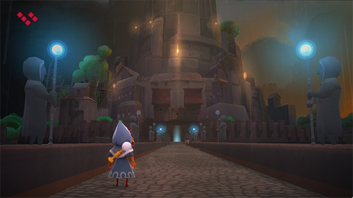
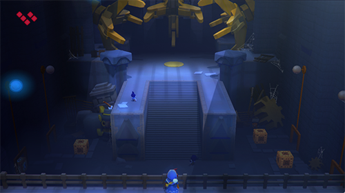
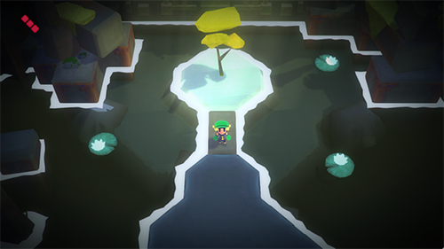

用你的魔法和勇气，与小伙伴们一起勇闯《西方世界》

章节一 追逐父亲
一位父亲和他的四个女儿相约去某个神秘的地方，由于种种原因，章节一的女主来晚了，还没等见到父亲，父亲就已经出发了。
女主在追逐父亲的途中，遇到了她的姐妹们，她的姐妹们也没能和父亲一起前去。但她们找到一个传送装置，可以通过传送装置直接到达父亲所在的神秘地方。
 不过这个装置很危险，它并不一定能够准确到达目的地，而有可能传送到达任何地方。女主一进入传送装置，装置就被一个不明所以傻傻分不清的姐妹启动了。然后女主来到了这个不知道什么地方的地方。
女主属性：
武器：魔法杖
技能：使用魔法杖短距离攻击，使用魔法球，魔法球可反弹
远程：瞬移一段距离，可以穿过薄栅栏
特技：能够驱动魔法井
章节二 一个孩子和他的铁铲
这小子被困在了地下，回不去地表。在这儿看到了这么一棵树，就推测，树是需要阳光的，阳光从正上方照射下来，所以这里一定有出口。
哦不，上面的内容是第一映像得到的剧情。真实剧情是，男主所在是一个挖矿工团伙。团伙中每个人都深信不疑他们现在是在月球上挖月岩。男主看到了地表穿透下来的阳光，怀疑这里根本不是月球是地球，然后把这一消息告诉了团伙老大。
然后被团伙老大赶了出来。

所有人都开始厌恶男主，认为男主是卑鄙的。男主不服，开始了证明他的猜疑之旅。
男主属性：
武器：铁锹、溜冰鞋、炸药
技能：使用铁锹短距离攻击，扔炸弹远距离攻击
远程：溜冰
特技：能够穿过低矮的洞穴，能够使用铁锹潜入土质松软的地下，使用溜冰鞋在水面上行走能够
章节三 魅惑雇佣兵
女主奉老板之命到西部区域的一处圣地取一块价值不菲的宝石。

任务途中女主遇到了老巫师和章节二中的铁铲小子，还看到了具有神秘力量的石柱，石柱上画着四个人的脸，包括女主的和铁铲小子的。
老巫师告诉女主，石柱上的四人将结为同伴，共同做一些不可描述的事情，她已经在石柱旁等了很长很长时间，石柱上的四人相遇是先前预言家预言过的。石柱还拥有让人瞬移的能力，在地图多处都有这样的石柱。
女主不信，继续找宝石。
寻找宝石的过程中，女主偶尔遇到困难，和铁铲小子合作通过了难关。
终于在西部区域的圣地拿到了宝石。

女主回到老板处交付宝石，并索取报酬。没想到老板背叛了她，不但没有给付报酬，还将她关押在地牢。
女主属性：
武器：罩巾、催眠术士的面具
技能：使用罩巾中距离攻击，敌人被击中会眩晕。催眠术士的面具让女主可控制被眩晕到的敌人
远程：移动加速
特技：使用罩巾拉动远方木桩，将自己拉送木桩所在位置
章节四 呔嗬
呔嗬是一位探险家，驾着船只从远方而来。

探险途中遇到了老巫师，以及章节一寻找父亲会使用魔法的女主。
男主属性：
武器：拳套
技能：拳击
远程：公牛冲锋
特技：击碎石头
章节五 勋爵和白鼬
现在呔嗬和卢米纳（会魔法的章节一女主）要合力前进了。
呔嗬追寻的是一只可与自己匹敌的野兽，卢米纳想要的则是回家的方法。
呔嗬打败了一直体型庞大的凶猛野兽，实现了愿望。

不过卢米纳却落空了。她要找的正是章节三女主拿走的宝石。卢米纳不得不去找她。
卢卡纳依旧落空了，宝石在老板那里。卢卡纳救出了被老板押禁的女主，然后一起乘飞行器前往沙漠，追寻老板和宝石。
章节六 追击
两个人来到了沙漠。
 在一个下着雪的神秘洞穴，遇到了这一章节的BOSS
在一个下着雪的神秘洞穴，遇到了这一章节的BOSS

没错，宝石依旧不在这里
宝石不在沙漠，在哪里呢？故事还远没有结束。
游戏剧情还是比较简陋的，大多是没有开头的故事，看的时候会不禁想问为什么，毕竟游戏没有把主人公的背景交代清楚
不过游戏很好玩，冒险解谜类游戏，尤其是好几个主人公在同一张地图中利用不同的技能穿过特性，真心想如果这是一款多人合作游戏该多好
但就单机游戏，它可以让人体会不同的人物情节，人物能力，以及合作的乐趣
画面也非常漂亮
尤其是你用一个人物第一遍走过了地形，第二遍还是同样的地方，却不得不因为人物的特殊能力另寻方法的时候，会感觉到游戏设计的精妙
人物和怪物都是Q版
难度不高，也不低，有些地方可能需要重复不止10次才能通过
游戏过程会有能力的提升，使用魔法的小女孩在到达天空（之城）后会学会使用可反弹的魔法球，后来在打败沙漠里的女BOSS后，学会了瞬移到魔法球所在位置的能力，位移距离大大增加，铁铲小子的炸药也是在后面的章节找到的
糙大叔之前只能爬矮墙，到后面高墙也能直接爬上去了
到之后相信那罩巾的和那铲子的也会学到新的能力
还会有更多的游戏内容
但是我不想再玩了
游戏整体稍（太）显（TM）幼（难）稚（了）
如果再年轻几岁，一定要死命玩通关